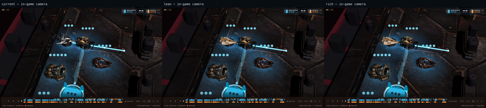
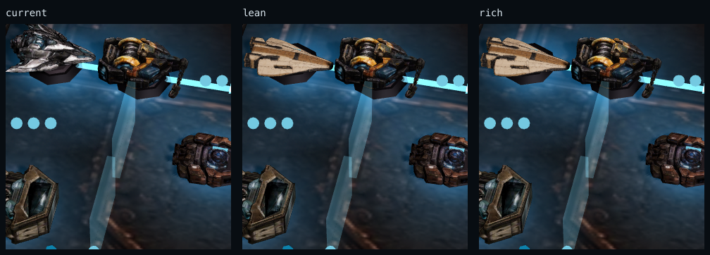
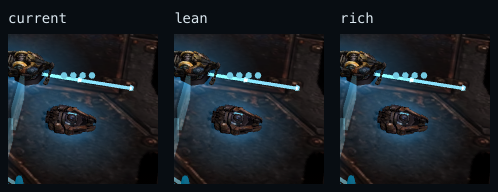

nilbots / arc relay / review only
Meshy 7 Kestrel, trimmed and in game.
The lean candidate keeps the approved pale, angular read at actual camera scale. It is 97.4% smaller and 96.0% lighter in geometry than the provider master; the current shipping Kestrel is still untouched.

1.67 MBdown from 64.34 MB
79,064 trisdown from 1,976,674
3 × 512review WebP maps



Review tier only. KTX2 compression and the recorded normal-map tangent warning must be resolved before this replaces the shipping Kestrel.